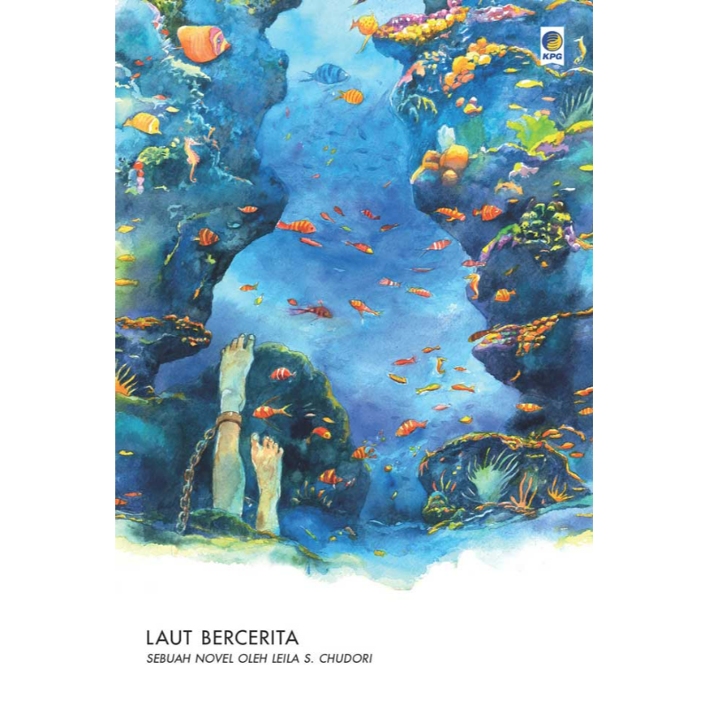
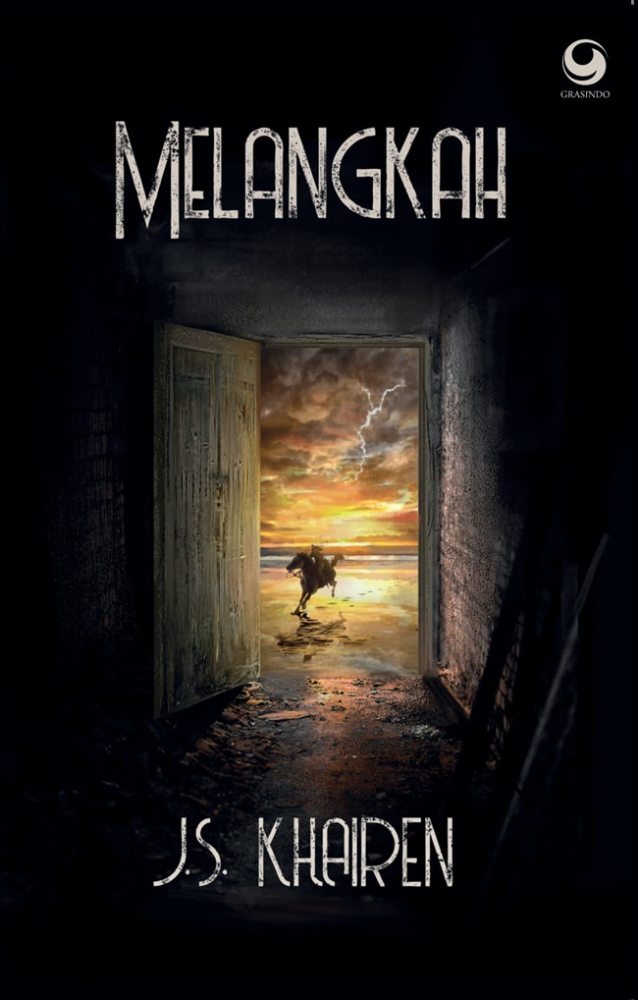

Penulis : Leila S. Chudori
Buku ini terdiri atas dua bagian. Bagian pertama mengambil sudut pandang seorang mahasiswa aktivis bernama Laut, menceritakan bagaimana Laut dan kawan-kawannya menyusun rencana, berpindah-pindah dalam pelarian, hingga tertangkap oleh pasukan rahasia. Sedangkan bagian kedua dikisahkan oleh Asmara, adik Laut.Bagian kedua mewakili perasaan keluarga korban penghilangan paksa, bagaimana pencarian mereka terhadap kerabat mereka yang tak pernah kembali. Buku ini ditulis sebagai bentuk tribute bagi para aktivis yang diculik, yang kembali, dan yang tak kembali dan keluarga yang terus menerus sampai sekarang mencari-cari jawaban... Baca Selengkapnya
| Format | Jumlah Halaman | ISBN | Harga |
| Soft cover, E-Book | 400 Halaman | 9786024246945 | Rp 100.000 |
Penulis : J. S Khairen
Novel Karya J. S Khairen yang berjudul Melangkah bertemakan tentang petualangan di Indonesia. Tidak hanya itu, cerita dalam novel ini juga mengutamakan kisah pahlawan. Berbeda dari karya-karya yang sebelumnya, di novel ini Khairen memberi sedikit imajinasi yan ia tanamkan. Terdapat 36 episode dan 5 babak... Baca Selengkapnya
| Format | Jumlah Halaman | ISBN | Harga |
| Soft cover | 368 Halaman | 9786020523316 | Rp 100.000 |